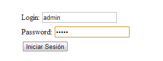

Mejoras de seguridad
Sistemas Distribuidos e Internet
Una creación de:
Álvaro Alonso Palacio - UO218732
Eduardo Parrado Puente - UO221513
Herminio García González - UO218768
Objetivo
Mejorar la seguridad contra posibles ataques que antes no se habían contemplado
Posibles ataques
Autenticación insuficiente
Acciones para las que el usuario no tiene privilegios, pero que por medio de un atajo puede hacer
Ejemplo
En este ejemplo vamos a coger la pantalla de edición de un mensaje, en principio sólo el usuario que escribio ese mensaje debería poder acceder a él.

Resultado
Vemos como en otro navegador que no comparte las mismas cookies se puede acceder a la edición del mensaje sin ningún problema

Solución
La solución a este problema es la comprobación de que las acciones que no se pueden ejecutar por otros usuarios esten bien autenticadas
Html Injection
Inyección de código HTML dentro de una página de tal modo que este sea ejecutado como tal
¿Por qué puede suceder?
Una mala gestión de las etiquetas HTML dentro de una página web que afecten a campos donde sea posible introducir texto
Pongamos un ejemplo sencillo
Supongamos que encontramos un foro y queremos verificar si es vulnerable ante este tipo de ataques, una forma es introducir una sencilla línea HTML
Éxito
Si nos apareciera el mensaje como en este caso el sitio sería vulnerable
Ataques mas serios
El HTMLi no solo sirve para cambiar el entorno visual de la página ya que podemos introducir scripts y demás, en una peticion POST, por ejemplo.
Soluciones
Dos formas sencillas de evitar esto es eliminando y/o desactivando las etiquetas
strip_tags() = Elimina las etiquetas
htmlentities() = Obtiene las etiquetas de la inyeccion pero no las ejecuta
XSS
Cross Site Scripting
Inyección de código de scripting para que sea ejecutado por el navegador del cliente
Dos tipos
- Reflejado: Cuando este es pasado como un parámetro entre diferentes vistas
- Persistente: Cuando este queda guardado en una base de datos y siempre va a ejecutarse
Ejemplo
Vamos a usar XSS de tipo persistente en el foro para ver la información de las cookies

Resultado
El resultado puede no parecer maligno pero podríamos usar esta prueba para hacer ataques más sofisticados

Solución
- Filtrar los datos de entrada, sobre todo los que contengan < ó >
- Para formatear texto usar otros recursos que no sean código html
- Uso de librerías anti-XSS
Sniffing
Escuchas ilegalaes de la red
Ejemplo
Vamos a ver un ejemplo de Sniffing en el foro. Nos registraremos cómo administrador y después utilizaremos un programa de escucha, a ver que pasa.
Resultado
Como podemos comprobar no tenemon ningún problema en hacernos con la contraseña del administrador.
Solución
- Utilizar cifrado en la comunicación
- Falta por completar
Sql Injection
Inyección de código SQL de manera que las consultas muestren datos que no deberían
Ejemplo
String consulta = "Select * from Users where username='"+ userInput +"' and password='"+ passInput +"';
¿Y si inyectamos un poco de SQL?
String userInput = ' OR 1=1; --Resultado: Suplantación de identidad
Select * from Users where username=' 'OR 1=1;
--' and password='miclave'Otros posibles usos
- Entrar como administrador -> admin'; --
- Borrado de datos -> 'DROP TABLE USERS; --
Solución
Uso de PreparedStatement en Java
Select * from user where username = ? and password = ?
CSRF
Cross Site Request Forgery
Forzar o engañar a un usuario autentificado a realizar acciones que no desea
Ejemplo
Lori envía una aparentemente inofensiva imágen al Administrador haciendo uso de los mensajes del foro
Resultado
El Administrador, un poco ingenuo, hace click en la imagen. Pero... ¡No es oro todo lo que reluce!
Consecuencia
El administrador sin saberlo, y puede que no se haya dado cuenta, ha desactivado la cuenta de Rick.
A Lori no le caía bien Rick :(
Solución
- Uso de librerias para intentar mitigar los ataques CSRF
- Ejemplo: OWASP CSRFGuard 3.0
Fin
Gracias por su atención